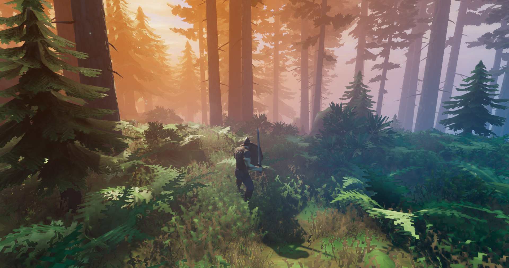

Valheim Best Weapons Tier List 2026 — All Weapons Ranked by Biome
Every weapon in Valheim ranked by biome, damage type, and overall effectiveness. From the Crude Bow to Ashlands endgame — this guide covers 35+ weapons across 7 biomes with S-A-B tiers, damage type breakdowns, crafting progression, and best-in-slot picks for every stage of the game.

⚔ All Weapon Types Overview
Every weapon type in Valheim, ranked by biome availability and overall effectiveness. Each type has a unique playstyle and biome where it excels.
Valheim offers 9 weapon categories (not counting magic and crossbows which arrive later), each with a distinct damage type, attack speed, and role. The key to an effective loadout is carrying at least two weapon types — one for your current biome's common enemy weaknesses and one for crowd control or backup.
Club / Mace (Blunt)
Best biome: Swamp (Bonemass). Maces are the most important weapon type in Valheim because blunt damage gets the highest damage multiplier in the game — Bonemass takes 50% more blunt damage. The mace skill tree is also the most stacked. Stagbreaker is a massive AoE hammer available as early as Black Forest (core wood + deer trophy) that staggers groups and reveals hidden enemies. Frostner (silver tier) is widely considered the best all-around weapon in the game — it deals blunt, frost, and spirit damage, slows enemies, and wrecks undead. Porcupine (plains tier) trades the frost effect for even higher raw damage per hit. If you only level one weapon skill, make it maces.
Sword (Slash)
Best biome: Plains. Swords are the most versatile weapon type — good attack speed, decent damage, and no major drawbacks. The Iron Sword carries you through the Mountains, but the real star is the Blackmetal Sword (Plains), which has the highest pure slash DPS in the game. The Mistwalker (Mistlands) adds a Mist-piercing light effect and spirit damage, making it excellent for Mistlands exploration where visibility is limited. Swords lack the crowd control of an Atgeir but outperform everything on single targets.
Atgeir (Pierce)
Best biome: Plains. The Atgeir is the best crowd-control weapon in Valheim. Its special attack (middle mouse) is a 360-degree spin that staggers every enemy in a large radius. Against Fuling packs in the Plains, you can stun-lock entire groups with repeated spin attacks. The Iron Atgeir is your first real Atgeir, the Blackmetal Atgeir carries through Plains and Mistlands, and the Carapace Atgeir (Ashlands) is the final upgrade. The spin attack consumes stamina but the stagger effect makes it worth every point.
Spear (Pierce)
Best biome: Meadows / Black Forest. Spears are fast, throwable, and have good reach, but they fall off hard after the early game. The Flint Spear is decent for early hunting, the Ancient Bark Spear is a minor upgrade, and the Fang Spear is just okay. Spears are outclassed by the Atgeir (pierce) and maces (blunt) from the Swamp onward. The main niche for spears is the throw attack — you can pull enemies from range without using bow ammo — but the bow does this better.
Battleaxe (Slash)
Best biome: None (mostly decorative). Battleaxes are the weakest weapon category. They are too slow, consume too much stamina, and leave you vulnerable during the long recovery animation. The Crystal Battleaxe looks amazing on a weapon rack but is outclassed in combat. The Jotun Bane (Ashlands) is the only battleaxe with competitive DPS, but it still requires careful stamina management. If you want big two-handed weapons, use the Stagbreaker or Demolisher instead.
Two-handed Hammer (Blunt / AoE)
Best biome: Swamp / Black Forest. Two-handed hammers like Stagbreaker and Demolisher are pure AoE stagger machines. They are slow but hit everything in a wide arc. Stagbreaker is available as early as Black Forest (core wood + deer trophy) and makes the Swamp much easier — it staggers Draugr, Blobs, and Skeletons, and reveals buried enemies. The Demolisher (Ashlands) is the endgame version with massive damage and knockback.
Bow (Pierce / Ranged)
Best biome: All biomes. The bow is the only weapon you should carry at all times. Ranged damage lets you pull enemies, avoid melee danger, and apply arrow effects (poison, frost, fire). Progression: Crude Bow (Meadows) → Finewood Bow (Black Forest) → Huntsman Bow (Swamp, +50% sneak bonus) → Draugr Fang (Mountains, best overall bow, innate poison arrows) → Spine Snap (Ashlands). The Draugr Fang is the standout — it has innate poison damage arrows (saving you materials), the highest base damage, and remains competitive into Mistlands.
Crossbow — Arbalest (Pierce / Ranged)
Best biome: Mistlands+. The Arbalest is a Mistlands-era weapon that deals enormous single-shot damage with a slow reload. It's essentially a ranged sniper — perfect for opening fights with a big hit, then switching to your bow or melee weapon. The Arbalest uses Bone Bolts and has the highest per-shot ranged damage in the game before magic. Its slow reload makes it unsuitable as a primary weapon, but as a boss opener it's excellent.
Magic (Elemental — Frost, Fire, Lightning, Spirit)
Best biome: Mistlands / Ashlands. Magic becomes viable in Mistlands when you unlock Eitr (the magic resource bar) and elemental staves. The Frost Staff (protection + slow), Fire Staff (high damage + burn DOT), Dead Raiser (summon skeletons), and Shield (temporary invulnerability) completely change the game. Magic is the dominant force from Mistlands onward. It requires specific Eitr-based food and the mage armor set, but the payoff is enormous — you can kill groups of Mistlands enemies from range without ever entering melee.
📊 Full Tier Table (S, A, B Tiers)
Every weapon type ranked by overall effectiveness. S-tier are must-craft weapons that define their biome. A-tier are excellent weapons worth upgrading. B-tier are situational or outclassed by alternatives.
| Tier | Weapon Type | Best Weapon | Biome | Key Strength |
|---|---|---|---|---|
| S | Mace | Frostner | Mountains | Blunt + Frost + Spirit — best all-around weapon in the game |
| S | Atgeir | Blackmetal Atgeir / Carapace Atgeir | Plains / Ashlands | Spin attack = best crowd control in Valheim |
| S | Bow | Draugr Fang | Mountains | Best ranged DPS, innate poison arrows, viable through Mistlands |
| S | Magic Staffs | Frost Staff / Fire Staff / Dead Raiser | Mistlands+ | Dominant from Mistlands onward — ranged elemental DPS |
| A | Sword | Blackmetal Sword | Plains | Highest pure slash DPS — excellent single-target damage |
| A | Mace | Porcupine | Plains | Highest raw blunt damage, trades Frostner's slow for more DPS |
| A | Crossbow | Arbalest | Mistlands | Highest single-shot ranged damage, excellent boss opener |
| A | Two-handed Hammer | Demolisher | Ashlands | Endgame AoE stagger machine |
| B | Battleaxe | Jotun Bane | Ashlands | Too slow, stamina hungry — outclassed by maces and swords |
| B | Spear | Fang Spear | Mountains | Outclassed by Atgeir and bow — throw niche only |
How to read this tier list: S-tier weapons are the best-in-class for their role and should be prioritized in every playthrough. A-tier weapons are excellent and worth upgrading to max level. B-tier weapons are usable but outclassed — craft them only if you enjoy the playstyle, not because they're optimal.
Your optimal loadout at any point should include: one blunt weapon (mace or hammer), one ranged weapon (bow, crossbow, or magic staff), and one crowd-control weapon (Atgeir). This triple loadout covers every enemy weakness and situation.
🗺️ Best Weapon by Biome
What to craft and use in each biome. The right weapon cuts your time in a biome by half.
| Biome | Best Weapon(s) | Crafting Material |
|---|---|---|
| Meadows | Crude Bow + Club | Wood, Stone, Flint, Leather |
| Black Forest | Finewood Bow + Bronze Atgeir | Finewood, Bronze, Core Wood, Deer Trophy |
| Swamp | Stagbreaker / Iron Mace + Huntsman Bow (Poison Arrows) | Iron, Ancient Bark, Core Wood, Deer Trophy |
| Mountains | Draugr Fang + Frostner | Silver, Wolf Pelts, Dragon Tear, Freeze Gland |
| Plains | Blackmetal Sword + Porcupine + Blackmetal Atgeir | Black Metal Scrap, Flax, Barley, Linen Thread |
| Mistlands | Krom / Mistwalker + Arbalest + Magic Staffs | Black Cores, Marble, Soft Tissue, Eitr, Sap |
| Ashlands | Ashlands-tier weapons: Carapace Atgeir, Spine Snap, Demolisher | Flametal, Ashland resources, Charred Bones |
🔍 Weapon Damage Types Explained
Understanding Valheim's damage types is the key to doubling your effective DPS against the right enemies.
Valheim has 6 damage types, and each enemy has different resistances and weaknesses. Using the wrong damage type can reduce your damage by 50% or more. Using the right type can double it.
Blunt
Blunt damage is the most important type in Valheim. Bonemass is 50% weak to blunt — the biggest damage multiplier against any boss in the game. Blunt is also effective against skeletons, blobs, and most undead enemies. Maces and hammers deal blunt damage. Every Valheim player should level their mace skill. The Swamp biome is practically designed around blunt weapons — Bonemass, Draugr, Skeletons, and Blobs all take extra blunt damage.
Slash
Slash damage is the best all-rounder. It deals bonus damage to plants (vines, growths) and Fulings. The Blackmetal Sword (slash) is the go-to weapon for Plains Fuling camps. Swords, axes, and battleaxes deal slash damage. No major enemy is resistant to slash, and several are weak to it. It's the safest damage type for general exploration.
Pierce
Pierce damage has the most situational value. It deals bonus damage to medium-armored enemies but most creatures are resistant to pierce, making it the least reliable damage type. Atgeirs, spears, bows, and crossbows deal pierce damage. The Atgeir makes up for the lower damage with its crowd-control spin attack. The bow makes up for it with range and arrow effects. As a primary damage type, pierce is weak — but the weapons that deal it (Atgeir, Bow) are excellent for other reasons.
Elemental: Spirit
Spirit damage deals extra damage to undead enemies (Draugr, Skeletons, Blobs, Bonemass). Frostner and Mistwalker both deal spirit damage, which is why they're so effective in the Swamp. Spirit damage does nothing to living enemies, so it's purely a biome-specific bonus.
Elemental: Frost
Frost damage slows enemies on hit and deals bonus damage to fire-based enemies (Surtlings). Frostner is the only pre-Mistlands weapon with innate frost damage, which is a major reason it's the best weapon in the game — slowing enemies makes every fight safer. In Mistlands, the Frost Staff offers ranged frost attacks.
Elemental: Fire / Lightning
Fire damage deals damage-over-time (burn) and is especially effective against growths, vines, and trolls. The Fire Staff (Mistlands) applies burn at range. Lightning damage (available through certain Ashlands weapons) deals high burst damage. Both are supplementary — useful for specific scenarios but not primary damage types for most of the game.
Recommendation: Carry 2+ weapon types at all times. Blunt for Swamp (Bonemass is 50% weak). Slash for Plains (Fulings are weak to slash). Pierce as secondary (Atgeir for CC, Bow for ranged). Magic for Mistlands and Ashlands (dominant endgame force).
| Damage Type | Strong Against | Weak Against | Best Weapon Examples |
|---|---|---|---|
| Blunt | Undead, Skeletons, Bonemass (+50%) | — (no major resistances) | Frostner, Porcupine, Stagbreaker |
| Slash | Plants, Fulings, Growths | — (no major resistances) | Blackmetal Sword, Mistwalker, Silver Sword |
| Pierce | Medium armor enemies | Most creatures (resistant) | Atgeir (blackmetal), Draugr Fang, Arbalest |
| Spirit | Undead (Draugr, Skeletons, Bonemass) | Living enemies (no effect) | Frostner, Mistwalker, Silver Sword |
| Frost | Fire enemies (Surtlings), slows all | Frost enemies (resistant) | Frostner, Frost Staff |
| Fire / Lightning | Growths, Trolls, Burn DOT | Fire enemies (resistant) | Fire Staff, Ashlands weapons |
🔨 Crafting Progression
The optimal weapon crafting path from Meadows to Ashlands. Don't waste materials on weapons you'll replace in 2 hours — follow this progression.
Flint Tier (Meadows)
Your first weapons are Flint-based. Craft the Flint Axe (also your woodcutting tool), Flint Spear for early hunting, and Crude Bow with Wood Arrows. This loadout handles Meadows content and the Eikthyr boss fight. Don't over-upgrade — you'll replace everything in Black Forest.
Key craft: Crude Bow (best ranged option in Meadows).
Bronze Tier (Black Forest)
Once you mine Copper and Tin, craft the Bronze Atgeir — your first real crowd-control weapon. The Bronze Mace is a solid upgrade from the Flint Spear. The Finewood Bow (Finewood from Oak/Birch trees) replaces the Crude Bow. The Stagbreaker (Core Wood + Deer Trophy) is available here — it's an AoE hammer that reveals hidden enemies and staggers groups.
Key craft: Stagbreaker (best Swamp prep weapon).
Iron Tier (Swamp)
The Swamp is where weapon choice matters most. Iron Mace is the #1 priority — Bonemass is 50% weak to blunt. The Iron Atgeir handles Draugr packs. The Huntsman Bow has +50% sneak attack bonus, making it excellent for picking off enemies from range. The Stagbreaker (already crafted in Black Forest) remains useful throughout the Swamp for its AoE stagger.
Key craft: Iron Mace (essential for Bonemass — do not skip).
Silver Tier (Mountains)
This is where you craft the two best weapons in Valheim. Frostner is made from Silver, Freeze Glands (from Drakes), and Ymir Flesh (from Haldor). It deals blunt + frost + spirit damage — the best all-around weapon in the game. Draugr Fang is crafted from Silver, Draugr Elite trophies, and Guck — it's the best bow in Valheim with innate poison arrows. The Wolf Fang Spear and Silver Sword are alternative options.
Key craft: Frostner + Draugr Fang (these two weapons carry you through Plains).
Blackmetal Tier (Plains)
Black Metal Scrap from Fulings unlocks your late-game arsenal. The Blackmetal Sword is the highest pure slash DPS weapon in the game — excellent for Fuling camps. The Blackmetal Atgeir spin attack stun-locks Fuling packs. The Porcupine is an alternative to Frostner — it trades the frost slow for even higher raw damage. The Needle Bow (from Death Needles) offers high pierce damage with a fast draw speed.
Key craft: Blackmetal Sword + Blackmetal Atgeir (Plains loadout complete).
Mistlands Tier
Mistlands introduces two new weapon systems. Mistwalker is a sword that pierces Mist (you can see enemies through Mistlands fog) and deals spirit damage. Krom is a greatsword with massive damage per hit. The Arbalest (crossbow) is the highest single-shot ranged weapon. But the real game-changer is Magic — the Frost Staff, Fire Staff, Dead Raiser (summon skeletons), and Shield (temporary invulnerability). Magic requires Eitr food and the mage armor set.
Key craft: Mistwalker + Magic Staffs (Mistlands forces you into magic or Mistwalker).
Ashlands Tier
The Ashlands update added the final tier of weapons. Carapace Atgeir is the ultimate Atgeir. Spine Snap (bow) outclasses Draugr Fang. Jotun Bane (battleaxe) is the only competitive battleaxe. Demolisher (two-handed hammer) is the endgame AoE stagger weapon. Ashlands weapons require Flametal and other Ashlands resources.
Key craft: Carapace Atgeir + Demolisher + Ashlands bow.
❓ Frequently Asked Questions
What is the best weapon in Valheim overall?
What weapon is best for Bonemass?
When should I switch to magic?
Is the Atgeir better than the Sword?
What is the best bow?
Can I use a Battleaxe effectively?
One Weapon Doesn't Rule Them All
Valheim's damage system rewards diversity. Carry a blunt weapon, a bow, and a crowd-control weapon — and swap based on the biome you're in. Bookmark us for updates as new biomes and weapons drop.
Data Sources & References
- Iron Gate Studio Official — Patch notes and weapon balance updates
- r/valheim Community — DPS testing, damage calculations, and biome strategy discussion
- Valheim Wiki — Base weapon data, crafting recipes, and damage type tables
Was this page helpful?